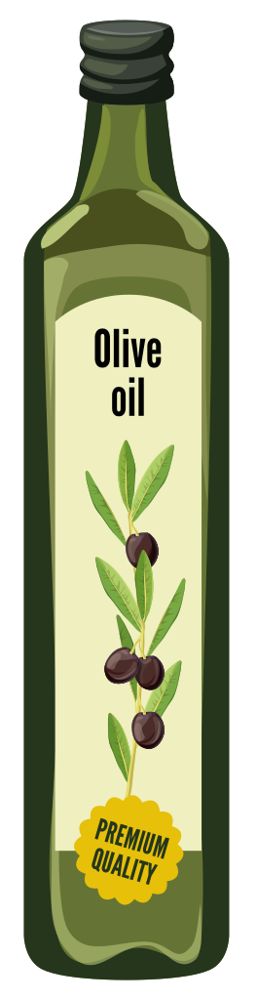
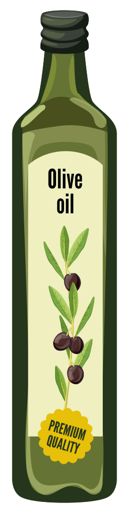

Ingredients


Elaboració
En primer lloc, peles tots el ingredients: creïlles, alls i revises que les anguiles estiguen ben tallades. Talles les creïlles a taquets i reserves.
Després, xafes els alls i els sofregeixes, tires el pebre-roig una volteta i el aigua. Una volta fet això, tires les creïlles i l'anguila.
Corregeix l'aigua fins que es cobreix pràcticament les anguiles i les creïlles es deixa bollir a foc mig.
Per als que els agrada un poquet picant es pot sofregir un pibrera juntament amb l'all.
Finalment, quan esta prou cuit i per a espessar el brou es pot xafar un poc les creïlles.